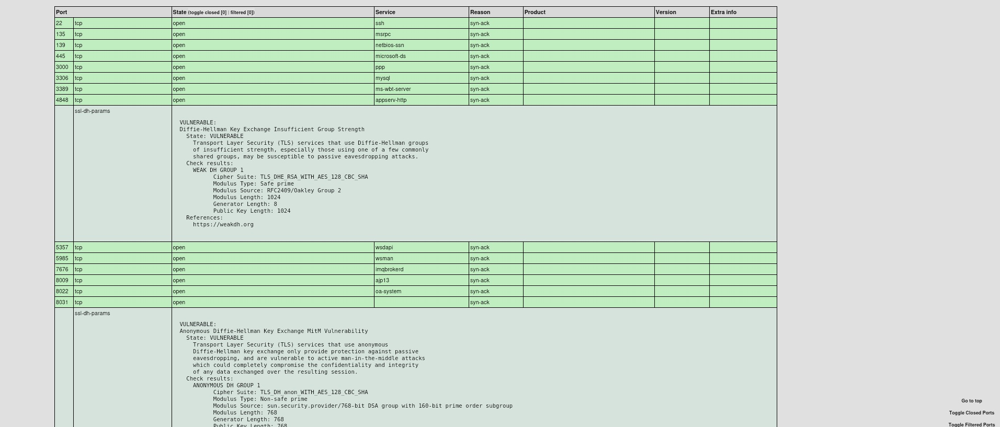
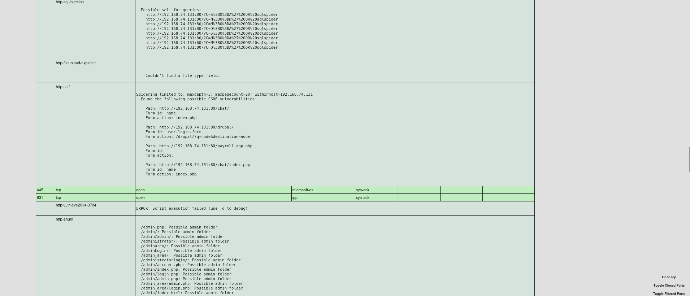

Si usamos el script --script=vuln obtendremos información detallada sobre vulnerabilidades en los servicios del dispositivo escaneado
Voy a escanear ambas máquinas virtuales y exportarlas, usemos el comando: sudo nmap -sS -v --reason --script=vuln 192.168.74.xx,xx -oX vulnerabilidades.xml --stylesheet="https://svn.nmap.org/nmap/docs/nmap.xsl"
Veamos primero los resultados para la máquina Windows
Resultados de la máquina Ubuntu
Como se puede ver, hay muchos fallos de seguridad explotables, y incluso te dan el código CVE
probemos acceder por ejemplo desde nuestra máquina principal Kali a la máquina Ubuntu en 192.168.x.x:x/admincontrol/login.php, para acceder, se tiene que especificar también el puerto, en este caso es el 631 por lo que después de la ip ponemos :631 de modo que: http://192.168.x.x:631/admincontrol/login.php
Como podemos comprobar, se puede acceder a un admincontrol
Usaré nuevamente: sudo nmap -sS -v --reason --script=vuln 192.168.74.x -oX vulnerabilidadesUbuntuTCP.xml --stylesheet="https://svn.nmap.org/nmap/docs/nmap.xsl"
Como siempre, elevamos permisos del xml con sudo chmod777 vulnerabilidadesUbuntuTCP.xml
Como se puede ver, esta vez da más información, eso se debe a que tenía puesto en el escaneo anterior el firewall de Ubuntu, pero lo he quitado para que se aprecie la importancia del firewall.
Nos fijaremos en concreto en esta: irc-unrealircd-backdoor: Looks like trojaned version of unrealircd. See http://seclists.org/fulldisclosure/2010/Jun/277